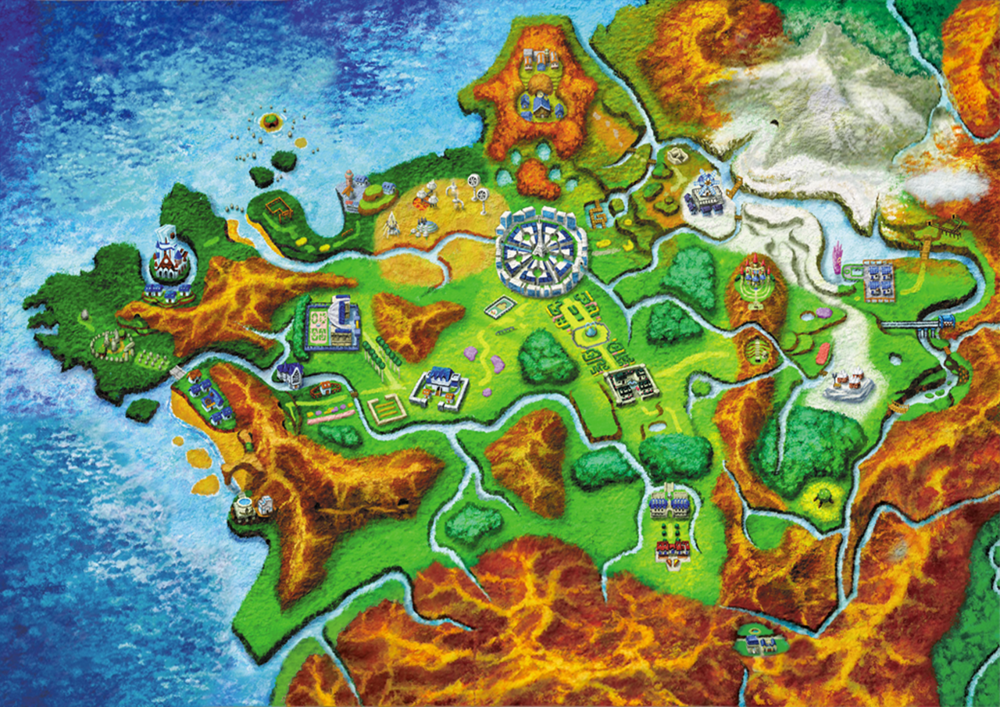

Pokemon Generations
Explore the Pokémon Generation introduced in each one!
Generation I

Kanto, named after the real-world region of Japan by the same name, features a variety of cities surrounded by mountains and plains, and even features a volcano on Cinnabar Island. Every town in the Pokémon Kanto region is named in reference to a color, like Viridian City, Lavender Town, and others. Players begin their journey in the quiet Pallet Town (a reference to the blank canvas of a painting) and the starter Pokémon offered to players in a basic Poké Ball are Squirtle, Charmander, and Bulbasaur.
Generation II
To the west of Kanto lies the Johto region, the setting for the second generation of Pokémon games, including Silver, Gold, Crystal, and their remakes HeartGold and SoulSilver. It is part of a landmass bordered by coastline at the south, and this region introduced 100 new Pokémon in addition to the previously discovered Gen 1 species.
Most of the towns in Johto are named in reference to plants and associated nature, like New Bark Town, Olivine City, and Mahogany Town. Players here were presented the choice of starters Cyndaquil, Totodile, and Chikorita.
Generation III
The Hoenn region was separated from the Kanto/Johto landmass as the setting in Generation 3, spanning Ruby, Sapphire, Emerald, and the Omega Ruby and Alpha Sapphire remakes. Based on the island of Kyushu, the region features a great deal of water to balance the landmass, in keeping with the lore of primal Groudon and Kyogre being the titans of land and sea. Most of the towns in Hoenn are immersed in nature, some only being accessible by travel through and even beneath water.
Hoenn was a more tropical environment, reflected in many of the types of Pokémon that could be found throughout trainers' journeys. This game introduced the idea of varying weather patterns, including rainfall, volcanic ash, and bright sunlight. Pokémon like Castform could even react and change form based on the environmental conditions here. Starters in this region included Treecko, Torchic, and Mudkip.
Generation IV

To the north of Hoenn, players were introduced to Sinnoh, an island region modeled after Japan's own northernmost territory, Hokkaido. This region is where the Generation 4 Pokémon games took place, including Diamond, Pearl, Platinum, as well as more recent titles Brilliant Diamond, Shining Pearl, and Legends: Arceus.
In contrast to its southern partner Hoenn, Sinnoh featured fewer waterways. Instead it focused on the central landmass divided by the massive Mt. Coronet in the center. To the northeast, the region featured a Battle Zone island. There was also a massive tundra to the very north of the island, and some of the cities in the game are directly based on Hokkaido's notable locales, like Pokémon's Jubilife City standing in for Sapporo City. Pokémon starters here include Piplup, Turtwig, and Chimchar.
Generation V
Moving out of the Japanese-themed regions, Generation 5's Unova region was actually inspired by New York City, reflected in the metropolitan regions and the more specifically themed Pokémon (such as the fan-favorites Garbodor, a garbage Pokémon, and Vanillite, an ice cream Pokémon). Despite the overall layout being based on New York City, there are landmarks from throughout the state that make up the entire region.
In this region, the whole area changes climate in-game about every 30 days, unlocking changes in Pokémon activity and special events. Spring, summer, autumn, and winter all occur across the entire territory.
Generation VI
The Kalos region is the sixth region to be introduced, serving as the setting for Pokémon X and Y. Shaped like a five-pointed star, the area is inspired by metropolitan France, with city names like Lumiose and Shalour. Froakie, Chespin, and Fennekin are the starters featured here. Unlike many of the other regions in earlier games, Kalos is isolated from other regions — in fact, in the Pokémon anime series, it must be reached by airplane.
Players in the Kalos region can travel to a Poké Ball factory, a massive facility that produces every collectible Poké Ball used in the Kalos region. Overall, the region's geography is extremely varied, including oceanic borders to the west and mountains to the east. It features rivers throughout, and it is divided overall into Central, Coastal, and Mountain Kalos, all meeting in the center at Lumiose City.
Generation VII

Alola is a unique region in the Pokémon world, split into four natural islands and one manmade island. Inspired by Hawaii, it is the backdrop for the Generation 7 Pokemon games Sun, Ultra Sun, Moon, and Ultra Moon. Within the game world, it is a popular tourist destination and all towns and cities are very integrated with nature.
Starter Pokémon in Alola include Rowlet, Litten, and Popplio. After picking a companion Pokémon, players must travel between the five islands: Melemele, Akala, Ula'ula, Poni, and Aether Paradise (a large floating structure). The region is surrounded by water and features volcanoes, rough terrain, rocky canyons, and dense jungles. Many previously discovered Pokémon have tropical variants, known as their Alolan forms, that can be found on the islands.
Generation VIII
Galar is the eighth region in the Pokémon series. It is one of the first to have more of its landmass added after the core title of the game, featured in the Crown Tundra and Isle of Armor expansions. Notably inspired by Great Britain (as if viewed upside-down), Galar incorporates cultural references from England, Wales, and Scotland into its topography and cities.
he Pokémon Sword and Shield titles take place in the Galar region, named for the legendary creatures Zacian and Zamazenta, who resemble traditional Coat of Arms creatures and incorporate their namesakes — the sword and shield — into their final forms. Players also met the new starters Sobble, Grookey, and Scorbunny here, each inspired by an element of British popular culture.
Generation IX

Paldea is the latest Pokémon region to be unveiled. This peninsular region is mostly surrounded by water except for its northern mountain range. It's inspired in both geography and culture by the Iberian Peninsula, and all of its towns plus certain notable landmarks are named after culinary items and dishes. The Paldean starters are Sprigatito, Fuecoco, and Quaxly.
The Naranja Academy and Uva Academy are the largest schools in the Pokémon world. In addition to housing these schools, Paldea also has Area Zero. This dangerous place is located in the center of Paldea, in the Great Crater of Paldea. It was formed millions of years ago and it contains wild Pokémon, time-displaced Paradox Pokémon, and Tetra Orb-enhanced Terestal Pokémon. Uncovering the mystery of Area Zero, and whether the Legendary Normal Type Terapagos resides there, is a central part of the player's Treasure Hunt journey.